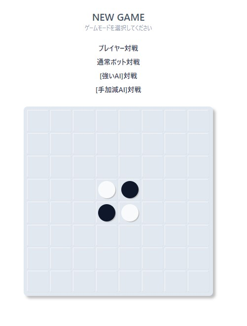
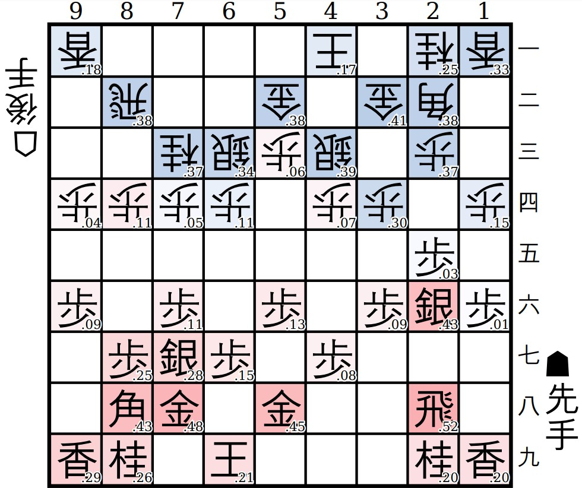
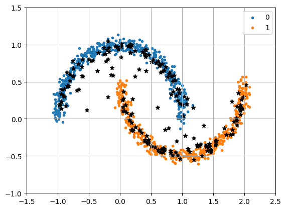
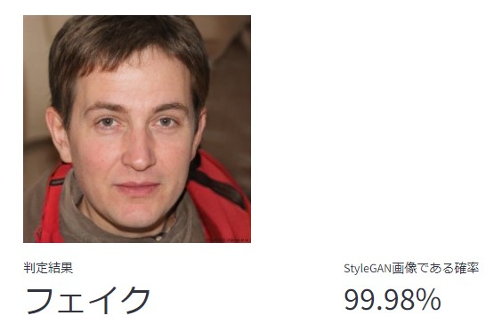
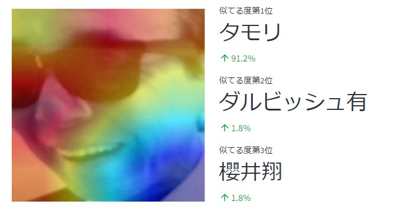
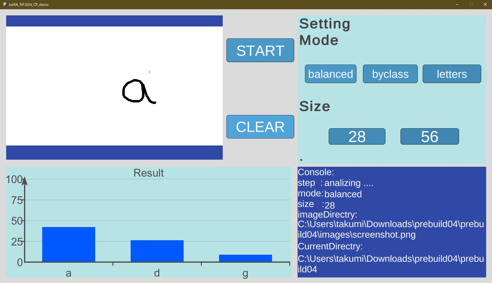

サークル紹介
京都大学人工知能研究会(KaiRA)は、AIについて学んでいるサークルです。
毎週木曜日に勉強会を行っており、今期は音声認識についての本と自然言語処理についての本を輪読しています。 読みたい本があれば、人を集めてみんなで読むことも可能です!
活動の中心は毎週木曜日の勉強会ですが、制作物を作ったり、チームを組んでkaggleなどの機械学習コンペティションに参加したりもしています。
スポンサーとして株式会社Ristさんと株式会社スクラムサインさんが付いてくださっており、サークルメンバーに対して本の購入補助や計算機代の補助もしています。
11月祭の展示で興味を持った方がいればぜひ一緒に勉強しましょう！
会誌
11月祭に向けてサークルメンバーで会誌を作成しました。少しでもAIの技術について興味を持っていただけたら幸いです。
今話題のChatGPT、ゲームAI、画像生成にもフォーカス！！ 合計100ページと内容盛りだくさんです！
- 第I部：AIの歴史と未来
- 第1章：AIはどこから来たのかAIは何者かAIはどこへ行くのか
- 第II部：ChatGPT
- 第2章：自然言語処理の基本アイデア
- 第3章：ChatGPTのモデルの仕組み
- 第4章：言語モデルのプロンプトエンジニアリング
- 第5章：生成系AIを巡る法的・倫理的課題
- 第6章：最近のLLMの動向
- 第III部：ゲームAI
- 第7章：引き分けを目指す「忖度オセロAI」
- 第8章：将棋AIの仕組み
- 第9章：将棋AIの思考プロセスを解き明かす：局面評価の可視化と考察
- 第IV部：画像生成
- 第10章：生成モデルの基本
- 第11章：生成モデルの応用
- 第V部：説明可能なAI(XAI)
- 第12章：LIME
- 第13章：SHAP
- 第14章：タラレバを機械で実現する方法
- 参考文献
デモ
11月祭会場ではAIに関するデモを行っていますが、一部のデモはオンラインでもご覧になれます。 ぜひ楽しんでいってください！！
忖度オセロAI

世の中には強いオセロAI、弱いオセロAIがたくさんありますが、プレイヤーとちょうど良い勝負をしてくれるようなAIはなかなかありません。 そこで、プレイヤーの強さに応じて忖度を行い、ちょうど良い勝負をしてくれるようなオセロAIを作成しました。
将棋AI

2023年10月、藤井聡太さんが前人未到の八冠独占を達成しました。 藤井さんはAIを用いた将棋の研究をしていることでも有名です。 AIがどれほど強いのか、腕試ししてみませんか？
拡散モデルサンプリング

拡散モデルでは、画像をある確率分布に従ってランダムにサンプリングすることで画像を生成しています。
サンプリングには色々な方法がありますが、データの分布が分かりやすいデータセットに対してサンプリング手法を複数個試したので、ぜひ実際にそれぞれのサンプリング手法を体感してみてください。
Stable Diffusionなどの拡散モデルではガイダンスと呼ばれる手法で生成する画像の種類を制御したりしますが、ガイダンスについてもデモがあります！
元のデータと似たようなデータを生成することができることやガイダンスによって生成するデータの種類を変えることができるということが体感できるでしょう！
フェイク画像判定

近年、画像生成技術が発達したことで、インターネット上の画像が本物なのか、それとも偽物（AIで生成された）画像なのかを見分けることが難しくなってきました。 そこで、ある画像が本物なのか、それともAI*で生成された画像なのかを判定するモデルを作りました。
*本デモは、StyleGAN2で生成された画像かどうかを判別するのに特化したモデルです。Diffusion Modelなどによる生成画像はこのAIでは判別できません。
歌詞からアーティスト判定XAI
歌詞を入力すると、どのアーティストの歌詞っぽいかを判定するモデルを開発しました。 テキストを文字単位で分割したデータを入力とする 「CharacterCNN（→論文）」 で学習を行いました。
さらにこのデモでは、歌詞のどの部分が予測に寄与しているかを 「LIME（→論文）」 という説明可能AI（XAI）手法を使って可視化してみました。 深層学習による予測はブラックボックスであることが多いですが、このようなXAI手法を使うことで、予測の根拠を可視化することもできます。
似ている芸能人判定XAI

あなたの顔が、50人の芸能人のうち誰に似ているかを判定するAIです。さらに、その判定根拠をGrad-CAMというXAI手法を用いて可視化します。
手書き文字認識AI

EMNISTという有名な手書き文字データセットを用いて、手書き文字認識を行うモデルを学習させました。 小文字のアルファベット、大文字のアルファベット、数字に関して実際に自分が書いた文字を判別してもらうことが可能です。
ちなみにこのデモは、今年度KaiRAに入会したばかりの1回生の会員たちが作成してくれました！